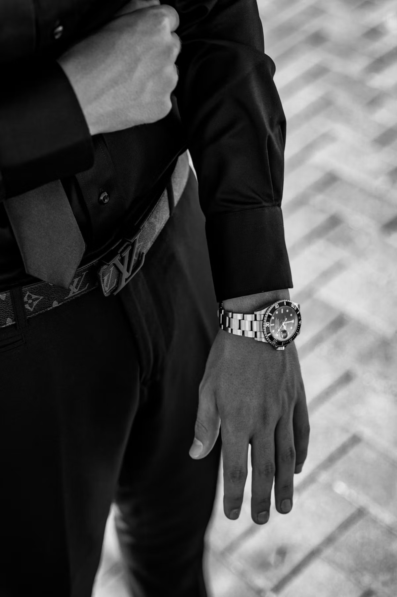

Abu Dhabi is one of the most overlooked great cities in the world to buy a Rolex Submariner in 2026 — and that is precisely its advantage. The UAE capital shares every structural benefit that makes Dubai a buyer's market — a 5% VAT rate, no capital gains tax on resale, a deep regional secondary market — but with less of the crowding and noise. The authorised presence is concentrated, well-established and genuinely premium, anchored by a house that has represented Rolex in the emirate for over half a century. The Submariner is findable here, and this guide tells you exactly where to look.

In 2026, the Submariner market has settled into a calmer rhythm after the turbulence of 2021 and 2022. Authorised retail for the no-date steel Submariner (reference 124060) sits at approximately AED 40,000, with the date model (reference 126610LN) around AED 44,500 — though Rolex does not publish UAE list prices openly, so confirm the current figure with the boutique. On the UAE secondary market, the no-date trades roughly AED 45,000–55,000 and the date model between AED 50,000 and AED 65,000, depending on condition and completeness — steel sport models typically carry a 30–40% premium over retail because demand outstrips authorised allocation. Where retail allocation is available and you have the patience, the authorised route remains the better value. Abu Dhabi's official boutiques are well-stocked across the classic range, which makes the capital a quietly strong place to pursue the authorised path.
Find Rolex Submariner references across all Abu Dhabi sources
Official boutiques · Certified pre-owned · Grey market · Auction houses
Search Rolex →Abu Dhabi's Authorised Rolex Retailer
Abu Dhabi's official Rolex presence runs through a single, deeply established name: Mohammed Rasool Khoory & Sons (MRK), which has represented Rolex in the emirate for over 53 years. That concentration is an advantage — there is no ambiguity about where the authorised route begins — and MRK now operates four dedicated Rolex boutiques across the capital, giving genuine breadth of access.
MRK Rolex Boutique — Yas Mall
The newest and largest of MRK's Abu Dhabi boutiques: a 235-square-metre flagship on the ground floor of Yas Mall, the biggest mall in the capital, on Yas Island. Furnished to Rolex's own Geneva-designed concept — including the signature emerald-green Oyster wave motif — it carries the full range from Professional models like the Submariner to the Classic collection. As everywhere, steel sport models are subject to waiting lists, and allocation rewards an established relationship.
MRK Rolex Boutique — Marina Mall
One of MRK's longest-standing Abu Dhabi locations, on the Corniche-adjacent Marina Mall. A dedicated Rolex environment carrying the core collection, and a practical first stop for buyers based in the city centre rather than out on Yas Island.
MRK Rolex Boutique — The Galleria Al Maryah Island
Located in the Central Atrium of The Galleria on Al Maryah Island, the capital's premier luxury destination. The boutique offers the full Rolex experience including a watchbar and private VIP room — a discreet setting for viewing the collection.
MRK Rolex Boutique — World Trade Center Souk
MRK's WTC Souk boutique carries the new-watch range and is an official Rolex Certified Pre-Owned point of sale — the authorised middle path between the retail waiting list and the open grey market. Every CPO watch carries Rolex's official seal and a guarantee of authenticity, with a new international two-year warranty from date of sale. For a buyer who wants a documented, brand-backed Submariner without a multi-year wait, this is the safest route in the capital.
In Abu Dhabi, the authorised path is unusually clear — one trusted house, more than five decades deep, across four boutiques. The question is rarely who, but how long you are willing to wait.
The Grey Market — Where Some Abu Dhabi Collectors Buy
As in any major market, a share of Submariners change hands outside the authorised channel — not because the retail route is closed, but because grey market specialists have stock now, not in eighteen months. The UAE's secondary market is large, liquid and competitive, which keeps premiums sharper than in many other cities. The trade-off is the same everywhere: quality of authentication varies enormously, so the dealer's reputation matters more than the price tag. Several pre-owned specialists serve Abu Dhabi buyers directly or ship from elsewhere in the UAE.
First Class Timepieces, Timepiece360 & UAE Pre-Owned Houses
A field of pre-owned dealers serves the Abu Dhabi market — among them First Class Timepieces and Timepiece360 — offering authenticated Submariner references with documentation and, in the stronger operations, their own short warranties. Many are Dubai-based but ship to or serve Abu Dhabi clients. Always confirm a dealer's standing in the collector community before committing, and treat any price markedly below the prevailing secondary range as a reason for more scrutiny, not less.
Chrono24 (UAE) & International Listings
For price discovery and breadth of inventory, Chrono24's UAE marketplace aggregates hundreds of Submariner listings from local and international sellers, with buyer-protection escrow on eligible transactions. Useful for benchmarking the fair market price before you walk into any boutique — but for high-value pieces, an in-person inspection remains the safer close.
Current Submariner Prices in Abu Dhabi — 2026
| Reference | Description | UAE Secondary (AED) |
|---|---|---|
| 124060 | No-date, steel, black bezel — current | 45,000–55,000 |
| 126610LN | Date, steel, black bezel — current | 50,000–65,000 |
| 126610LV | Date, steel, green bezel "Starbucks" | 58,000–70,000 |
| 116610LV | Discontinued "Hulk", green dial & bezel | 65,000–80,000 |
| 126613LB | Two-tone steel/gold, blue dial "Bluesy" | 70,000–90,000 |
| 116610LN | Previous generation, steel, black | 42,000–52,000 |
Secondary market ranges, UAE, 2026. Approximate authorised retail: 124060 ≈ AED 40,000; 126610LN ≈ AED 44,500 (Rolex does not publish UAE list prices openly — confirm with the retailer). Always verify current figures before purchase.
Why Abu Dhabi Is a Quietly Strong Market
Three structural factors work in the buyer's favour. First, tax: at 5% VAT with no capital gains tax on resale, the all-in cost of ownership is lower than in most of Europe, and exit is cleaner. Second, access: with four official MRK boutiques — including a 235-square-metre Yas Mall flagship and a Certified Pre-Owned counter at WTC Souk — the authorised range is genuinely accessible, and often less besieged than Dubai's busiest flagships. Third, regional liquidity: Abu Dhabi sits inside the wider UAE secondary market, one of the deepest and most competitive anywhere, so fair prices and onward resale are both within easy reach. For visitors, the tourist VAT refund can further reduce the effective price — worth confirming the current scheme and eligibility at point of sale.

The Five Rules of Buying a Submariner in Abu Dhabi
- Inspect in person above AED 20,000. Abu Dhabi's boutiques and dealers welcome viewings. Never complete a high-value purchase on photographs alone, however strong the seller's reputation.
- Insist on box and papers. A Submariner without its original Rolex box and documentation trades at a meaningful discount and always will. Papers are permanent value.
- Verify the serial. Every Rolex serial can be cross-referenced to confirm approximate production date. Reputable UAE dealers share this freely — hesitation is a red flag.
- Prefer certified or documented over cheapest. The MRK Certified Pre-Owned route, or a fully documented grey market piece, is worth the premium over an undocumented bargain. In a market this liquid, you rarely need to gamble.
- Buy condition, not discount. The gap between a good and an excellent example is always recovered on resale. Never compromise on condition to save a few percent.
Search all Abu Dhabi and global sources simultaneously
50+ verified sources including Abu Dhabi's official and pre-owned dealers
Find Submariner →